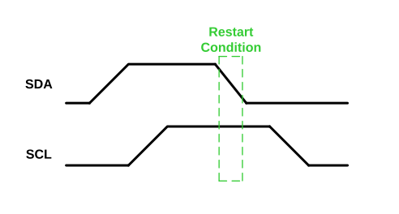

A Restart condition is essentially the same as a Start condition – the SDA line transitions from an idle level to an active level while the SCL line is Idle – but may be used in place of a Stop condition whenever the host device has completed its current transfer but wishes to keep control of the bus. A Restart condition has the same effect as a Start condition, resetting all client logic and preparing it to receive an address.
A Restart condition is also used when the host wishes to use a combined data transfer format. A combined data transfer format is used when a host wishes to communicate with a specific register address or memory location. In a combined format, the host issues a Start condition, followed by the client’s address, followed by a data byte which represents the desired client register or memory address. Once the client address and data byte have been acknowledged by the client, the host issues a Restart condition, followed by the client address. If the host wishes to write data to the client, the LSb of the client address, the Read/not Write (R/W) bit, will be clear. If the host wishes to read data from the client, the R/W bit will be set. Once the client has acknowledged the second address byte, the host issues a Restart condition, followed by the upper byte of the client address with the R/W bit set. Client logic will then acknowledge the upper byte and begin to transmit data to the host.
The figure below shows a Restart condition.
